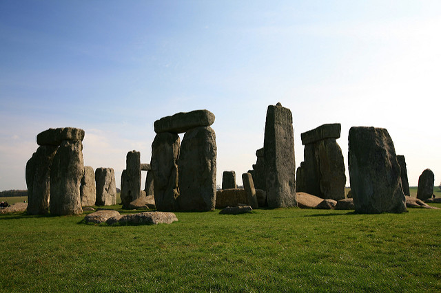
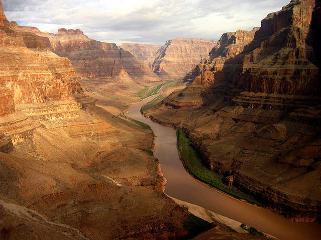
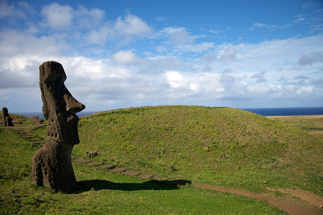
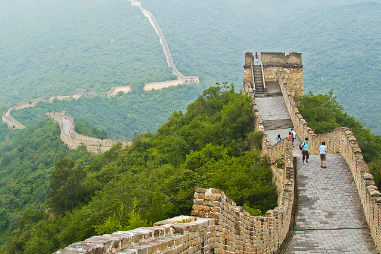
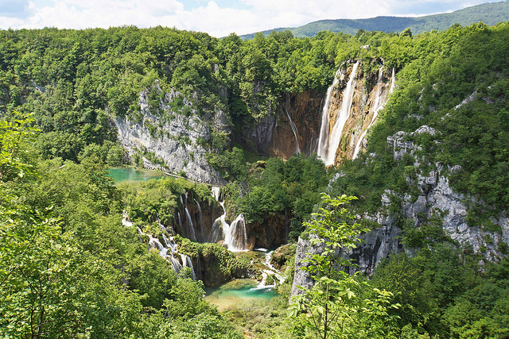
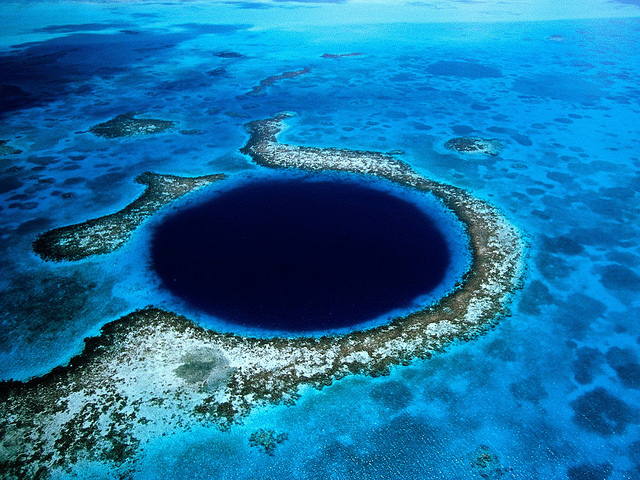
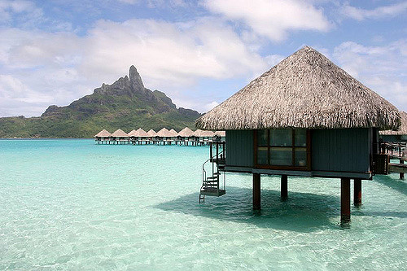
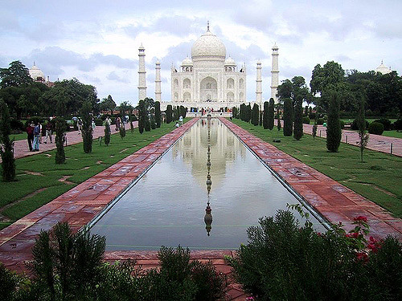

As the only one of the Seven Ancient Wonders of the World still largely intact, the Pyramids of Giza are definitely worth a visit. Dating back to around 2,560 BC, the Great Pyramid of Giza stood as the tallest man-made structure for over 3,800 years.
Stonehenge, Amesbury, England

Lots of mystery surrounds Stonehenge, and contrary to those who believe it’s just a pile of 25-ton rocks, it’s actually a beautiful sight. Book a guided tour to visit the center, and at sunset, enjoy the stunning glow of the setting sun between Stonehenge’s pillars.
The Grand Canyon, Arizona, USA

Carved over thousands of years by the Colorado River, the Grand Canyon is a sight to behold that one simply can’t fathom without being there. The massive rock walls span for over 200 miles.
Easter Island, Rapa Nui, Chile

Like Stonehenge, no one really knows the story behind the 887 Easter Island “moai” statues. Even so, they offer visitors a great adventure. Plus, travelers can enjoy other Easter Island adventure options, like hiking and scuba diving.
The Great Wall of China, China

This massive, man-made wall stretches thousands of miles long. Not only does the marvelous structure leave many visitors scrambling to pick up their jaws knowing it was made by human hands, but it’s atop a mountain ridge that delivers awe-inspiring views of the area.
Plitvice Lakes National Park, Croatia

This area is among one of the most beautiful in the world, with crystal clear waters, lush green scenery, and stunning waterfalls.
The Great Blue Hole, Belize

Off the coast of Belize, divers find a submarine sinkhole called The Great Blue Hole, where the water is 407 feet deep. It’s over 980 feet wide and can easily be seen from above.
Bora Bora, French Polynesia

Bora Bora is the poster child of the iconic tropical paradise. This island sits 143 miles northwest of Papeete, in the South Pacific, and features the extraordinary turquoise waters, white sand beaches, and beautiful greenery you’d hope to find in the tropics–only it’s more fantastic than you can imagine.
Taj Mahal, Agra, Uttar Pradesh, India

The Taj Mahal is a truly beautiful architectural feat. It’s a massive, white, marble-domed mausoleum constructed in the 1600s that attracts over three million visitors each year.